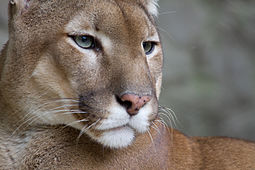

El puma, león de montaña o león americano (Nombre científico: Puma concolor)2 es un mamífero carnívoro de la familia Felidae nativo de América. Este felino vive en más lugares que cualquier otro mamífero silvestre terrestre del continente, ya que se extiende desde el Yukón, en Canadá, hasta el sur de la cordillera de los Andes y la Patagonia en América del Sur. El puma es adaptable y generalista, por lo que vive en los principales biomas de toda América. Es el segundo mayor félido en el continente americano, después del jaguar, y el cuarto más grande del mundo, después del tigre, y el león. Su tamaño es algo mayor que el del leopardo, aunque está más emparentado con los pequeños felinos, ya que, a diferencia de los grandes félidos del género Panthera, que pueden rugir excepto el irbis, el puma ronronea como los felinos menores. Como cazador y depredador de emboscada, el puma obtiene una amplia variedad de presas. Su principal alimento son los ungulados como el ciervo, en particular en la parte septentrional de su área de distribución, pero también caza camélidos como el guanaco y especies tan pequeñas como insectos y roedores. Prefiere hábitat con vegetación densa durante las horas de acecho, pero puede vivir en zonas abiertas.
